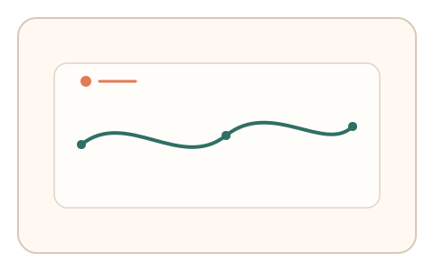
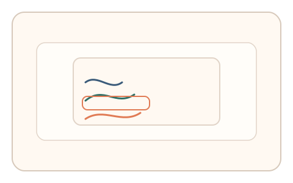
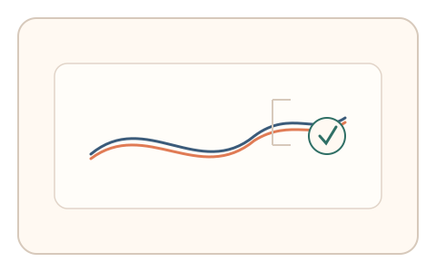

#80
Morphological Analysis - Combination Batches
已扩展
异步现实印章
在正常交互中采集在场轨迹，异步弹出微任务让用户匹配轨迹特征，以预测误差与相对比较判定真实性。
概念原文
在用户正常操作时记录真实在场的时间‑动作轨迹，稍后异步弹出微任务要求匹配该轨迹的局部特征，并以预测误差与任务内相对比较判定。任务结构为异步验证，信号形态为预测误差与轨迹动力学。
把验证从当下动作转成跨时一致性证明，脚本难以补足在场轨迹。
研究背景
真实用户在自然操作中形成稳定的时间‑动作轨迹，而脚本难以在不同时间点保持连续一致性。将验证从当下动作转移到跨时一致性，可增强对自动化的抵抗力。
核心机制
- 后台记录用户真实交互轨迹与微时序特征。
- 稍后弹出微任务，要求匹配轨迹的局部节奏或曲线。
- 计算预测误差与相对选择一致性。
- 多次异步触发以累积稳定信号。
用户流程
- 步骤 1：用户正常完成页面操作，系统记录轨迹。
- 步骤 2：稍后出现短微任务，要求匹配轨迹片段。
- 步骤 3：系统计算预测误差并给出判定。
判定信号
轨迹动力学预测误差
真实用户的轨迹节奏在短时间内具有连续性。
相对匹配选择一致性
真实用户更容易匹配自己的轨迹特征。
判定逻辑
预测误差需落在人类连续性区间，并在多轮匹配中保持一致；随机或过度完美判异常。
对抗面
- 脚本记录并重放轨迹特征
- 伪造固定节奏曲线以匹配任务
防御与缓解
- 随机化异步触发时机与任务形式
- 绑定上下文参数降低重放价值
- 叠加多段轨迹与时序信号进行多信号判定
可达性与风险
提供可跳过的替代验证或简化任务，避免对记忆与认知造成负担。
- 用户未意识到异步任务导致困惑
- 隐私与透明度要求需明确告知
可视化状态

状态 1：轨迹记录
用户正常操作时记录轨迹。

状态 2：异步微任务
稍后弹出匹配轨迹的微任务。

状态 3：误差判定
根据预测误差与一致性判定。
参考资料
Behavioral biometrics
说明行为轨迹作为验证信号的依据。
Motor memory
说明跨时一致性的动作记忆基础。